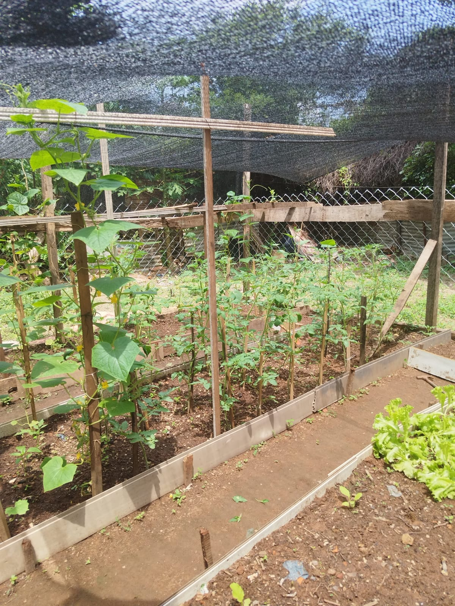
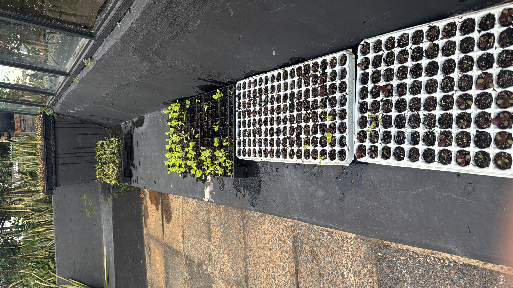
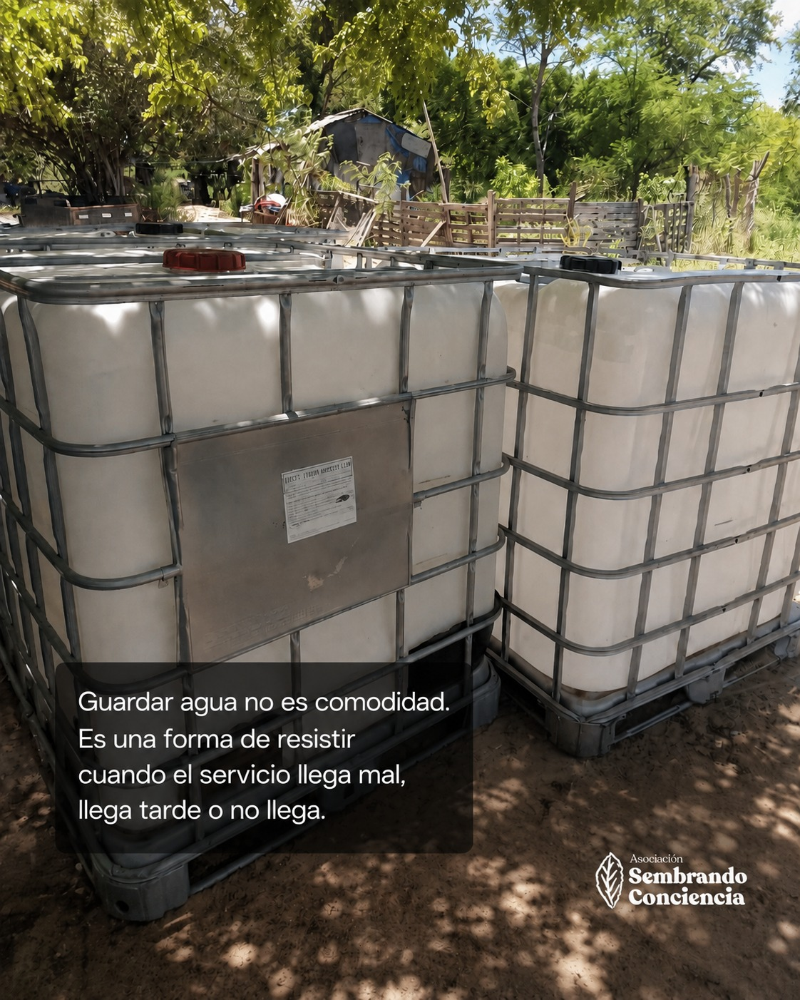

Seguridad y soberanía alimentaria
Acompañamos iniciativas de huertas comunitarias y escolares en los territorios donde trabajamos. Las huertas no son solo fuentes de alimento: son espacios de encuentro, de aprendizaje y de recuperación de saberes sobre la tierra.
Trabajamos en la producción agroecológica, la formación en alimentación saludable y el fortalecimiento de capacidades para que las familias puedan sostener sus propias iniciativas productivas. La comunidad educativa de Fe y Alegría San Cayetano, con aproximadamente 700 estudiantes, es uno de los espacios donde este trabajo se desarrolla con más intensidad.

Educación ambiental
La educación ambiental es transversal a todo nuestro trabajo. Organizamos talleres en escuelas y espacios comunitarios para construir conciencia sobre el ambiente, el territorio y los derechos que lo protegen.
Creemos que el conocimiento es una herramienta de transformación. Por eso trabajamos con niños, jóvenes y adultos en procesos de aprendizaje situado: desde el territorio, con sus realidades y sus posibilidades.

Economía circular y reciclaje
Impulsamos iniciativas de separación y reciclaje de residuos que combinan cuidado ambiental con generación de valor en las propias comunidades. La economía circular es una forma concreta de reducir el impacto ambiental y crear oportunidades locales.
Formamos a referentes comunitarios para sostener estos procesos y articulamos con otros actores para que las iniciativas tengan continuidad más allá de cada intervención puntual.

Agua y resiliencia climática
En los Bañados de Asunción, el acceso al agua potable es un derecho que todavía no está garantizado para todas las familias. Acompañamos iniciativas de acceso al agua en Banco Hovy y otras comunidades, donde la falta de presión en la red o la ausencia de servicio es una realidad cotidiana.
Hemos participado en la instalación de tanques de almacenamiento y cañerías para mejorar el acceso al agua en situaciones de emergencia y de déficit estructural. El trabajo en este eje combina respuesta inmediata con incidencia para garantizar el derecho a largo plazo.

Participación y fortalecimiento comunitario
Todas nuestras acciones tienen un hilo en común: fortalecer la capacidad de las propias comunidades para organizarse, decidir y actuar. No trabajamos para las comunidades, sino junto a ellas.
Acompañamos procesos de formación de referentes, espacios de intercambio y articulación entre comunidades para que el conocimiento y la experiencia circulen. Creemos que la organización comunitaria es en sí misma una forma de ejercer derechos.